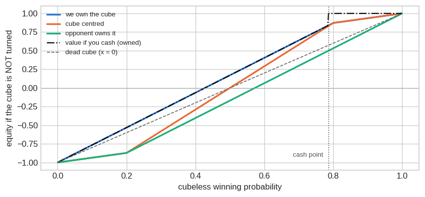
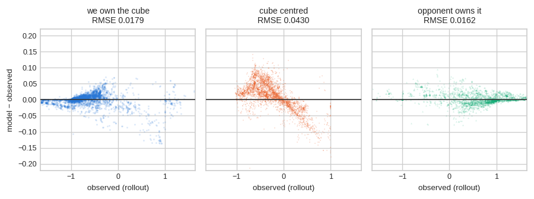
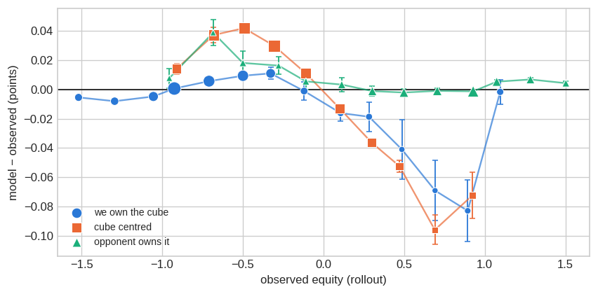
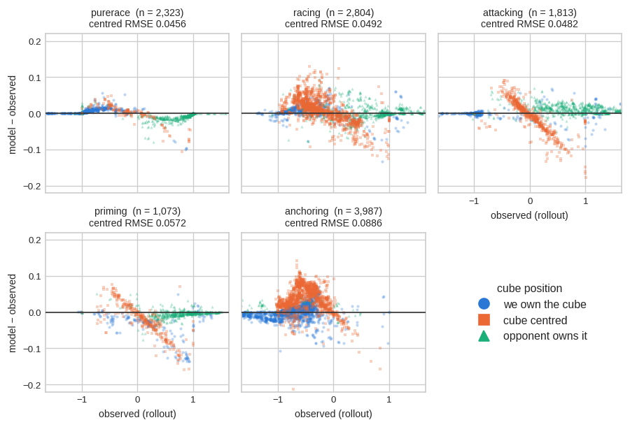

The Doubling Cube
Janowski’s model, measured against 33,395 rolled-out equities — and what Raccoon built from it.
Rick Janowski’s cube-life-index model is how a cubeless evaluation becomes a cube decision. GNU Backgammon and eXtreme Gammon both ship it, and the constant they use — \(x = 0.68\) for contact positions — has stood essentially unchanged for as long as they have shipped it. Janowski’s own 1993 paper does not give 0.68; he estimates \(x\) at between \(\tfrac12\) and \(\tfrac34\), “with \(\tfrac23\) being a normal value”. The 0.68 is GNU Backgammon’s. It is rarely measured, because measuring it needs observed cubeful equities for a large and varied set of real positions.
Those observations were already on disk. The BGSage money benchmark rolled positions out to completion with the cube live, recording for each candidate a measured cubeful equity next to the cubeless probabilities for the same position — and the cube sits in a different place across them, which is what makes the model separable. This page tests it on 33,395 of those, then reports what happened when Raccoon implemented it: exp024 measures the model, exp025 ships it into move selection and measures what that buys, and exp026 plays it against real GNU Backgammon.
The short answer is that the model is in good shape and the conventional constant survives. Two of the three equity formulas are correct at \(x = 0.68\) to within 0.018 of a point. The third, for a centred cube, wants a much higher index — but adopting it buys nothing where the parameter is actually read, and we cannot explain it, so we are not acting on it. What is worth fixing is structural: use the piecewise form, respect the provable bounds, and floor \(W\) and \(L\) at one point.
Two numbers this page used to report were wrong, and both errors are the same kind, so they are worth stating rather than quietly correcting. Reference quality is recorded in two fields, not one: filtering on eval_level alone admitted truncated rollouts whose leaves call Janowski. Against references that include them, retuning the index looks worth +1.167 ± 0.271 cube PR. Against references that are actually measurements it is worth +0.128 ± 1.242 — nothing. The measurement section sets out the filter that separates them.
Everything here is money play with the Jacoby rule and beavers on, matching the benchmark. Match play, where the score moves every take point, is out of scope and is not calibrated by anything below.
The model is three formulas
A network evaluates a position cubelessly: six probabilities for winning or losing a plain game, a gammon, or a backgammon, if the game were played out with no cube. Under real rules that game never happens. Janowski’s model says what those probabilities are worth once the cube is on the table.
It starts by compressing the outcome distribution into two numbers — the average value of a win and of a loss:
\[W=\frac{\sum_i i \cdot P(\text{win } i)}{P(\text{win})} \qquad L=\frac{\sum_i i \cdot P(\text{lose } i)}{P(\text{lose})}\]
A gammonless position has \(W = L = 1\). Two extremes can then be solved exactly. A dead cube can never be turned again, so the game plays out at the current stake and a take risks \(2L-1\) to gain \(2W+1\) — the familiar 25% take point. A live cube is redoubled at exactly the right moment every time, which adds a constant bonus and gives the continuous model’s 20%. Real positions sit between, at a fraction \(x\) — the cube life index, 0 for dead, 1 for live.
What matters below is that the model then produces three different equity formulas, one per cube location (Janowski’s equations 5–7):
\[E_O = C_V\left[p(W + L + 0.5x) - L\right] \qquad \text{we own the cube}\]
\[E_U = C_V\left[p(W + L + 0.5x) - L - 0.5x\right] \qquad \text{opponent owns it}\]
\[E_C = \frac{4C_V}{4-x}\left[p(W + L + 0.5x) - L - 0.25x\right] \qquad \text{centred}\]
Every take point, cash point and doubling point in the paper is derived by setting two of these equal. So the model stands or falls on them, and — crucially — they can fail independently. That is what makes the measurement below possible, and it is not something a cube decision can reveal: a double compares only two locations at a time.
One property of \(x\) matters later: it describes the position, not the cube. Janowski names three things that set it — how far the position is from the optimal doubling point, how wide the doubling window is, and how volatile the position is — and states that the cube-ownership bonus is “proportional to the degree of cube-life of the position (and inversely proportional to its long-term volatility)”, with \(x = 0\) at maximum volatility and \(x = 1\) at zero volatility. He does not derive a value for it; he writes that “finding accurate values for \(x\) is a difficult, almost impossible, task” and estimates typical ones. All three factors are properties of the position, and a position has the same three whoever holds the cube, so \(x\) cannot legitimately depend on where the cube sits.
What is Janowski’s model? → Three equity formulas sharing one parameter, one per cube location, from which every take point and doubling point is derived. They can be wrong independently, and \(x\) is meant to describe the position, not the cube’s location.
What the engines ship, and what to ship
Three implementation decisions, all settled before any fitting. Each is either provable or measurable, so none of them costs a parameter.
Use the piecewise form, not equations 5–7
Equations 5–7 are linear in \(p\), so they run straight past the values a game can actually pay. GNU Backgammon and BGSage instead pin the live-cube equity at the four points where it is known — \(-L\) at \(p = 0\), \(-1\) at the take point, \(+1\) at the cash point, \(+W\) at \(p = 1\) — and interpolate linearly between them, flattening the outer segments to \(\pm 1\) under Jacoby. That is a substitution for equation (7), not an approximation of it.
It is also more accurate. On owned cubes the piecewise form reaches RMSE 0.0177 against 0.022–0.027 for the algebra, and its fitted indices sit close to the convention rather than scattering. raccoon/cube/janowski.py implements the piecewise form.
The bounds are provable, so they should never be fitted
If you double and your opponent takes, they took because taking beat passing for them, so you collect less than \(+1\); if they pass you collect exactly \(+1\). No doubling line pays more than a point. Undoubled you cannot collect more than the natural size of the win. So
\[-L \;\le\; E \;\le\; \max(1, W) = W\]
and under Jacoby with the cube centred this tightens to \(\pm 1\), since an undoubled gammon counts one anyway. The measured rollouts respect it. The piecewise form satisfies it by construction — both the dead and the live branch lie inside the bounds, so any blend of them does too — which is a second reason to prefer it over the algebra, which breaks the bound by up to a full point. We pin this as a property test rather than enforcing it with a clamp, so a change that breaks it fails loudly instead of being silently patched over.
Floor \(W\) and \(L\) at one point
Not a defensive nicety; the labels violate it. Variance reduction reports corrected means rather than counts, so a rare outcome can come back very slightly negative, and \(W = 1 + (P_{gw} + P_{bgw}) / P_{win}\) divides that by a win probability that can be minute. Across this benchmark that produces 550 rows with \(W < 1\), ten of them below zero, and a worst case of \(-5.29\) — which would put the take point and both envelope endpoints through the floor. A win cannot be worth less than a point. Flooring inside compute_wl repairs every consumer at once.
What should the implementation look like before any tuning? → Piecewise interpolation, bounds as a test rather than a clamp, and \(W, L \ge 1\). All three are free: no parameter, no fitting, no benchmark needed.
How to measure it
Cube models are usually argued about rather than measured, because the references are hard to come by. This benchmark has them — but most of its entries cannot judge a Janowski variant, and it takes two fields to tell which can.
It takes two fields to identify a measurement
eval_level records how a reference was produced; tier records how much effort the decision earned. Neither is sufficient alone, because BGSage gives truncated rollouts the same Rollout label as full ones. Crossed:
| reference | tier |
eval_level |
cube entries | rolled-out candidates |
|---|---|---|---|---|
| played to completion | rollout |
Rollout |
282 | 33,395 |
| truncated at 3-ply | 3T |
Rollout |
418 | 9,241 |
| 3-ply search | 3P |
3-ply |
1,496 | — |
Only the first row is an observed average. The truncated rollouts stop at a cubeful 3-ply evaluation that calls Janowski at its own leaves, and the 3-ply references are that same search all the way down — so scoring a Janowski variant against either is scoring it partly against itself.
The bias does not show up where you would look for it. Pooled cube PR barely moves — 2.353 over all references against 2.259 over the measured ones — because the contaminated groups pull in opposite directions: the model scores an implausible 0.649 against the 3-ply references it half-agrees with, and 7.726 against the truncated ones, which are the hardest decisions in the benchmark. The level looks fine. What breaks is every comparison made on it:
| references | baseline | one refitted index | paired gain |
|---|---|---|---|
| all 2,196 entries | 2.353 | 1.185 | +1.167 ± 0.271 |
| the 282 measured ones | 2.259 | 2.130 | +0.128 ± 1.242 |
Deeper cubeful search sees cube value a static evaluation cannot — market losers, mostly — so a larger \(x\) lets a 0-ply model imitate a 3-ply one. Refitting against search-derived references buys depth, not accuracy, and it does not survive contact with a real payoff.
The checker rollouts are the instrument, not the cube decisions
The benchmark’s cube entries look like the natural place to test a cube model, but only 282 of them are measured, and a cube decision structurally cannot separate the three formulas — it compares two locations at a time. The checker candidates can. Every one carries a measured cubeful equity beside the cubeless probabilities for the same position, and the parent decision records where the cube sat, so each formula is testable on its own against 33,395 observations.
Two properties of these positions carry into every conclusion below. They are post-move positions, so the opponent is on roll — the formulas do not model whose turn it is, so we evaluate from the on-roll player’s side and negate. And the cube decisions taken during each rollout come from a bot that also uses Janowski, so these measure equity under Janowski-quality cube play rather than optimal cube play.
The references have a noise floor
Every rolled-out candidate carries a standard error, so the benchmark can be asked how well it knows its own answer:
Across 5,651 rolled-out decisions the median standard error on the gap between the best move and the runner-up is 0.0033 of a point. 32% of those decisions have their best move within one standard error of the second-best, and 51% within two.
That noise is fixed and identical for every engine scored, so comparisons stay fair. But it puts a floor under achievable PR, and it is why a near-parity engine cannot be separated on move accuracy alone — a third of the closest decisions in the benchmark do not have a knowable right answer.
Compare like with like, or the model is charged for an option
Janowski’s formulas give the no-double equity — what a position is worth if the cube stays put — while a rollout reference always includes the option to double. Comparing the two directly charges the formula for an option it was never asked to price. Since these are post-move positions the option belongs to the opponent, so the matching quantity is \(\min(\text{ND}, \max(\text{DT}, -1))\): a minimum over their choice, a maximum over ours. Getting that backwards inflates the centred error by half. Four positions checked by hand in GNU Backgammon confirm the distinction — its No double line reproduces cl2cf_money closely and its optimal line matches the rollout.
Can Janowski be measured with what we already have? → Yes — on 33,395 observed cubeful equities, spanning all three cube locations, at zero play cost. But only an eighth of the benchmark’s cube entries can judge it, and a pooled score hides that: the level looks normal while every comparison built on it inflates.
What the measurement says
| formula | cube location | n | bias at 0.68 | RMSE at 0.68 | best \(x\) | RMSE there |
|---|---|---|---|---|---|---|
| \(E_O\) | we own the cube | 14,813 | +0.0007 | 0.0179 | 0.710 | 0.0177 |
| \(E_C\) | cube centred | 10,677 | +0.0135 | 0.0430 | 0.925 | 0.0307 |
| \(E_U\) | opponent owns it | 7,905 | +0.0025 | 0.0162 | 0.720 | 0.0155 |
\(E_O\) and \(E_U\) are right, and the published constant is right for them. Bias under 0.003 of a point across 22,718 positions, RMSE under 0.018, and freely fitted indices of 0.71 and 0.72 — close to each other and close to 0.68, which is what a genuine property of the position should look like. Refitting moves their RMSE by about 1%.
\(E_C\) is the outlier. Nineteen times the bias, more than twice the RMSE, and it wants 0.925 — a nearly perfect cube. Even there it stays worse than the other two are for free.
An independent check that the method is sound rather than the model being uniformly bad: let the index float against the take/pass line alone, told nothing about what it should be.
Across all 282 measured cube positions the take/pass index comes out at 0.700, against GNU Backgammon’s published 0.68. Within pure races it comes out at 0.515, against GNUBG’s documented 0.60 race constant.
The measurement reproduces both published constants without being told either.

Averages hide where the failures are. Binning the same errors by observed equity, with intervals clustered on the checker decision — candidates within one decision are the same position played different ways, and clustering roughly doubles the intervals against treating them as independent:

\(E_U\) is correct wherever it has weight — on zero from about \(-0.2\) equity upward. \(E_O\) is correct until the position is nearly won, then sags through the band where a cashing decision is live and snaps back above \(+1.0\). That band is thin, which is why the aggregate barely notices it. \(E_C\) is wrong in both directions — positive when the position is losing, negative when it is winning, crossing zero near even equity. A residual that changes sign cannot be removed by any constant, any index, or any offset.
The \(E_O\) sag has a mechanism worth naming, because it is a modelling choice rather than a measurement question. The model blends a dead branch with a live branch in fixed proportion, \((1-x)E_{\text{dead}} + xE_{\text{live}}\). As a position approaches its cash point the live branch has reached its ceiling of \(+1\) while the dead branch is still only \(2p-1\), so the blend drags the answer down by roughly \((1-x)\) times the gap between them. But a position near its cash point does not need future cube efficiency — you double and your opponent passes. A fixed weight is defensible in the middle of the range and not near the boundary.

Where is the model weak? → Only in the centred formula, and everywhere in its range rather than in one position type or one game plan. The other two are correct at the published constant.
Why we are not acting on the centred index
A centred cube fits at 0.925 — almost a perfect cube. The result is robust: it survives clustered bootstrapping, disjoint halves of the games, and every formulation of the Jacoby handling we tried, and it reproduces on the benchmark’s own cube entries, which need no perspective flip at all. It is also the case where \(x\) matters most. And we still cannot explain it.
Two honest readings remain, and this data cannot separate them. Either an initial double really is more efficient than a redouble — both players can pick their moment, and a full ladder of recubes lies ahead — or the centred formula is missing something structural that \(x\) absorbs. The second is the better bet given the sign change above, since no constant can produce one.
What settles the practical question is that adopting it buys nothing.
The index is read for move selection, not for takes
Everything above is an estimation metric: every candidate weighted equally, scored on how close the model lands. That is not how the parameter earns its keep. Over 500 games the benchmark asks:
| question | times in 500 games | relative frequency |
|---|---|---|
| which move? (every turn) | 14,693 | 22.5× |
| should I double? (every turn with cube access) | 2,189 | 3.4× |
| should I take? (only when actually doubled) | 653 | 1.0× |
So the index is read for move selection roughly 22 times as often as for a take decision — and move selection only cares about the ranking of candidates within one position, where an error common to all of them cancels. A change can look valuable on RMSE and be worth nothing here. On the 5,695 measured decisions that offer a real choice:
| setting | picks the best move | mean cubeful equity lost |
|---|---|---|
| published x = 0.68 | 88.0% | 0.00053 |
| centred 0.925, owned 0.68 | 87.6% | 0.00060 |
| one refitted index (0.800) | 88.0% | 0.00053 |
Retuning moves this by a fraction of a percentage point, and the centred refit makes it slightly worse. There is no case for shipping it.
Should the centred index be changed? → No. It is a real and unexplained feature of the data, but acting on it costs accuracy where the parameter is actually read. Keep 0.68 and record the anomaly as open.
exp024, re-scored
Hypothesis. Janowski’s functional form is adequate and its published cube-life index is simply mis-set: re-fitting \(x\) recovers the cube-decision error that \(x = 0.68\) leaves.
Primary metric. Cube PR on the BGSage money benchmark — mean equity thrown away per decision, times 500 — restricted to the 282 positions whose references were played to completion, n = 432 sub-decisions, fed the benchmark’s own reference probabilities so the net’s evaluation error is out of the comparison. Variants are fitted on half the games and confirmed on the held-out half, and compared to the baseline paired.
| variant | cube PR | paired vs baseline | coherent? |
|---|---|---|---|
| \(x = 0.68\) (published) | 2.259 ± 0.488 | — | yes |
| 0.68 contact / 0.60 race | 2.228 ± 0.489 | +0.031 ± 0.112 | yes |
| one refitted index | 2.130 ± 1.140 | +0.128 ± 1.242 | yes |
| refitted per cube state | 1.306 ± 0.326 | +0.953 ± 0.528 | no (93% violations) |
| 0.68 plus a fitted shift | 2.138 ± 0.477 | +0.121 ± 0.190 | yes |
| \(x = 0\) (dead cube) | 5.566 ± 1.657 | -3.307 ± 1.647 | no (94% violations) |
| \(x = 1\) (live cube) | 6.680 ± 1.950 | -4.422 ± 2.058 | yes |
Nothing beats the published constant. The two fitted variants land about 0.12 lower with intervals many times that wide, the race split is inside noise, and the dead and live envelopes are far worse — which is the sanity check that the model is doing real work between them.
The coherence gate matters more than the PR column. For any one position \(E_O \ge E_C \ge E_U\) must hold: owning the cube cannot be worth less than it being centred, which cannot be worth less than the opponent owning it. Nothing in the fitting enforces that, because each entry is either centred or owned, so the three lines are fitted on disjoint position sets. The per-state fit scores best on PR and drives the owned-cube index to 0.42 against the 0.71 the equity data gives, inverting the ordering on 93% of positions. PR cannot see that, because each scored decision involves only one cube location. A mis-set constant cannot produce an impossible ordering; a mis-specified form can.
Power, stated rather than assumed. 432 sub-decisions cannot resolve a small change: the paired interval on the refitted index is ±1.242, so this test would miss anything under about a point of PR. It is a null in the sense of no evidence of benefit, not proof of no effect. The move-selection comparison above, at 5,695 decisions, is the better-powered instrument and agrees.
Where Raccoon’s own evaluations land
| probabilities | cube PR (n = 432) |
|---|---|
| benchmark reference (the model alone) | 2.259 ± 0.488 |
| Raccoon exp018/ep22 | 2.684 ± 0.622 |
| GNUBG 0-ply | 2.658 ± 0.638 |
Raccoon’s net and GNUBG at 0-ply are indistinguishable on cube decisions, and both sit a little above what the model reaches on perfect probabilities — the cost of evaluation error rather than of cube modelling.
Is the cube-life index mis-set? → No. Against references that are measurements, no variant beats \(x = 0.68\) (best: one refitted index, +0.128 ± 1.242 paired, n = 432). The earlier +3.206 came from references produced by a search that uses Janowski at its own leaves.
What Raccoon built
exp024 left the cube specified but unbuilt: the shipped net already emitted the six-outcome distribution, raccoon/cube/janowski.py was written and tested, and nothing in the playing path referenced it. exp025 closed that gap.
The model, settled and unchanged. Piecewise dead/live blend; \(x = 0.68\) for contact and \(0.60\) in races; one index for all three cube locations, never one per location; \(W\) and \(L\) floored at 1; the \([-L, W]\) bound as a test. Nothing was refitted.
Two pieces of perspective logic, both in raccoon/cube/state.py, both easy to get silently wrong and therefore both pinned by tests. CubeState translates between seat indices, which a game loop speaks, and the CENTERED/PLAYER/ OPPONENT labels, which Janowski speaks. And flip_label records the rule that changing perspective flips the cube owner as well as the sign of the equity — negating alone hands the opponent your cube ownership, and nothing about the resulting number looks wrong.
Cube-aware checker play came first, not the double/take decision, because the model is read for move selection roughly 22 times as often. child_cubeful_values in raccoon/train/lookahead.py shares its enumeration, doubles handling and leaf dedup with the cubeless child_values through a common enumerate_leaves, so the two rankings cannot drift apart. The regression test that matters is an identity: at \(x = 0\) with no Jacoby, cl2cf_money is cubeless_equity, so the cubeful path must reproduce the shipping cubeless one to the last bit on real positions.
The prize was already measured. A perfect cubeless player throws away
PR 0.336 ± 0.042 on the cubeful metric, with cubeless-best and cubeful-best differing on 992 of 14,693 decisions (6.8%). It concentrates exactly where the cube is most alive — PR 0.553 with the cube centred against 0.145 when the opponent owns it — and is nearly absent in pure races (0.046).
That floor is what a player with perfect probabilities leaves behind. The question exp025 asks is how much of it a real net, carrying its own evaluation error, actually claims.
exp025, cube-aware checker play
Hypothesis. Ranking candidate moves by Janowski cubeful equity instead of cubeless equity reduces the cubeful move-selection error of the shipped net (exp018/ep22).
Primary metric. Cubeful PR on all 14,693 BGSage checker decisions — mean cubeful equity thrown away per decision, times 500 — scored against each candidate’s equity field rather than its cubeless_equity, which is the same reference the cube-blind floor above is measured on. The two arms are compared paired, with the interval bootstrapped over the 499 generating games.
Why paired, and why it is not optional. The arms agree on the great majority of decisions — the rankings differ on only 376 of them (2.6%) — so their per-decision errors are identical almost everywhere and an unpaired comparison of two PR numbers has an interval far wider than the effect. Both errors are therefore taken off the same six-outcome forward pass: for an outcomes6 head the value head’s equity is exactly cubeless_equity of its own distribution, so the arms are paired by construction rather than by re-running and hoping the passes matched. The separately-run cubeless arm reproduces the derived one to rounding, which is the check that the shortcut is sound.
| cube position | n | cubeless ranking | cubeful ranking | gain | 95% CI |
|---|---|---|---|---|---|
| all decisions | 14,693 | 1.382 | 1.307 | +0.075 | [+0.025, +0.126] |
| we own the cube | 4,015 | 1.149 | 1.155 | -0.007 | [-0.055, +0.040] |
| cube centred | 5,657 | 1.851 | 1.655 | +0.196 | [+0.079, +0.316] |
| opponent owns it | 5,021 | 1.039 | 1.037 | +0.003 | [-0.034, +0.041] |
The gain is real and small. Cubeful ranking is worth +0.075 PR with the interval clear of zero. Against the 0.336 floor that is about 22% of the available prize — the rest is eaten by the net’s own evaluation error, which is the thing that decides which candidate the cube term is applied to. The rankings differ on 2.6% of decisions against the 6.8% on which a perfect player’s would.
All of it sits in one bucket, and it is the tainted one. The gain is confined to a centred cube; with the cube owned by either side it is indistinguishable from zero. That is where exp024 said the cube-blindness lives, so the sign is unsurprising — but a centred cube is also exactly where the Jacoby rule bites, and the benchmark was generated with Jacoby on while Raccoon’s target is money without it. Scoring here therefore models Jacoby to match the references, and the Jacoby-clean owned-cube buckets are the ones showing no effect. This is weaker evidence for the target game than the interval suggests, and it is the first thing a follow-up should attack.
No head-to-head, deliberately. The natural completion is “and it beats GNUBG at cubeful money”. It is not here because there was no honest opponent to hand. gnubg-nn — the package every other Raccoon number is measured against — cannot make a money cube decision at all (evaluate_cube_decision raises Not implemented for money; the binding covers match play only), and it ranks checker plays cubelessly. Bolting our own Janowski layer onto its probabilities gives a match in which both sides share one cube model, while real GNU Backgammon uses the closed form only as a leaf evaluator inside a cubeful search that makes cube decisions at every node. That opponent is weaker than real GNUBG precisely on the cube, so a win against it would not be the goal.md criterion. The real opponent does exist — /usr/games/gnubg answers money cube decisions and cube-aware checker play at about 71 ms per 2-ply decision — and wiring it up is exp026.
Supporting, and demarcated. The cubeful arena built along the way (raccoon/eval/cube_arena.py) established that the dice-luck control variate survives a live cube: scaling each luck term by the cube value at its own roll keeps it unbiased (mean luck \(t = +0.26\) over 600 games), and using a cubeful \(h\) rather than a cube-scaled cubeless one cuts the standard deviation 7.32× against 5.24×, at \(\hat\beta = 1.017\). That is a property of the estimator, which exp026 reuses. The ppg those games implied was deliberately never read, and is reported nowhere.
Is cube-aware checker ranking worth anything? → Yes, but little of what was available. Cubeful ranking beats cubeless ranking by +0.075 PR (95% CI [+0.025, +0.126], n = 14,693, bootstrapped over 499 games) — about 22% of the cube-blind floor, and all of it with the cube centred.
exp026, against the real GNU Backgammon
exp025 measured the cube on a static benchmark and reported no head-to-head, because there was no opponent that could play one. This experiment supplies the opponent and runs the match.
The package cannot play a cubeful game; the binary can
Every Raccoon result before this was measured against gnubg-nn, the Python package that wraps GNU Backgammon’s networks. It cannot make a money cube decision at all — evaluate_cube_decision raises Not implemented for money, its binding covering match play only — and it ranks checker plays on cubeless equity. Supplying the missing half with our own Janowski layer produces a match in which both sides use the same cube model, while real GNU Backgammon uses the closed form only at the leaves of a search that decides the cube at every node. That opponent is weaker than the real one on exactly the quantity a cube experiment measures.
The installed gnubg binary does the whole job. raccoon/eval/gnubg_cli.py drives it as an oracle: it is asked what to play or what to do with the cube, and nothing else, so Raccoon keeps running the game and rolling the dice — which is what allows the variance-reduced estimator to intercept every pre-roll state. Positions are set by named commands (set board with GNU Backgammon’s own Position ID, then set turn, set dice, set cube value, set cube owner) rather than by the FIBS board: line, which is about fifty unlabelled integers whose field order we could not obtain from any reachable copy of the specification.
Two checks stand behind every number below. The Position ID GNU Backgammon echoes back must equal the one sent, which tests the encoding against itself and so does not depend on either engine’s evaluation. And every move it returns is converted to a resulting board that must match one of the mover’s legal turn outcomes, so a notation error stops the run instead of silently playing a different move; this was exercised over whole games, 105 turns with no mismatches, including bar entries, hits, bear-offs, doubles and dances.
The two GNU Backgammons are different networks, and it does not matter
They ship different weights. The topology is identical — six networks, race 214-128-5, crashed and contact 250-128-5, and three pruning networks — but the trained values differ: the package’s file declares itself version 1.01, the binary expects 1.00, rejects it, and rejects its contents even when the version string is changed. Their 0-ply probabilities differ by up to about 0.003.
Since every earlier Raccoon number was measured against the package, they were played against each other, cubeless, at 0-ply, which is the setting exp019 and exp020 used:
The binary scores -0.0026 ± 0.0047 ppg against the package (n = 6,000, variance-reduced). The interval covers zero and excludes anything larger than about 0.005 ppg either way.
The two are the same opponent at the precision that matters, an order of magnitude below exp020’s +0.0472 edge, so earlier results can be quoted alongside this one without a correction term.
Hypothesis, metric and power
Hypothesis. The shipped net (exp018/ep22) with the Janowski cube layer wins at non-Jacoby cubeful money against real GNU Backgammon at 2-ply.
Primary metric. Variance-reduced cubeful ppg from Raccoon’s point of view, seats alternating, 95% interval.
Power. A 600-game pilot read only the standard deviations; its ppg was never examined and is not reported.
It gave sd_raw 2.907 and sd_vr 0.433, the latter within a thousandth of the 0.434 exp025 measured against the stand-in — the estimator does not depend on which opponent it watches. n was then fixed at 7,206 for a half-width of 0.01 ppg, matching the precision exp019 and exp020 reached, and not revisited.
What Raccoon fielded, and what it did not
Raccoon selected moves by 0-ply cubeful lookahead — no search — while GNU Backgammon searched two plies for both its checker play and its cube. The configuration played here is materially weaker than the engine can field, on both halves of the game, and the result has to be read that way.
For checker play the gap is measured. On the BGSage benchmark’s checker decisions, ep22 with depth-2 expectimax scores PR 0.426 against GNU Backgammon 2-ply’s 0.588 (exp021, n = 2,000); the 0-ply selection used here scores about 1.03 on the same positions. Raccoon’s checker play beats GNU Backgammon’s at matched depth and was not used.
The reason is cost, not choice. On this machine depth-2 search runs at 29.3 seconds per decision and depth-1 at 4.25, against roughly 0.01 for 0-ply. At about sixty decisions per game, a 7,206-game match at depth 2 would take on the order of a thousand hours against the 4.4 hours this run took. The cheapest settings exp023 found without measurable strength loss still cost about 1,000 evaluations per decision, which is roughly 2.5 minutes per game.
So this number bounds one configuration, not the engine: 0-ply checker play and a root-only cube, against 2-ply checker play and a cubeful search. Both dimensions were conceded. It does not establish that GNU Backgammon is stronger than Raccoon.
Result
| quantity | value |
|---|---|
| variance-reduced ppg | -0.0375 ± 0.0109 |
| raw ppg | +0.0616 ± 0.0703 |
| games | 7,206 |
| games won | 3,557 (49.4%) |
| standard deviation, raw / reduced | 3.046 / 0.473 (6.45x) |
| cube turned | 5,045 of 7,206 games |
| games ending in a pass | 43.4% |
| Raccoon doubled | 4,589 of 98,067 opportunities (4.7%) |
| Raccoon took | 2,850 of 4,565 offers (62.4%) |
| gnubg subprocess restarts | 0 |
Raccoon loses, and the interval is clear of zero. Read against the two comparable numbers on the same network, the result is consistent rather than surprising: Raccoon beats GNU Backgammon at 0-ply and loses to it at 2-ply.
| comparison | opponent | cube | result |
|---|---|---|---|
| exp020 | GNUBG 0-ply (package) | none | +0.0472 ± 0.0027 |
| exp011b | GNUBG 2-ply (package), net ep3 | none | −0.064 ± 0.046 |
| exp026 | GNUBG 2-ply (binary) | live | see above |
goal.md asks for a positive average win against GNU Backgammon at world class settings with the interval above zero. It is not met by this configuration, which is the only claim the run supports.
The luck diagnostic, and why the result stands
Accumulated dice luck averaged +0.0991 over the run (t = +2.87), where zero is expected. This does not bias the estimate: vr = raw - luck and the luck terms have mean zero by construction whatever a given sample does, so the reduced mean estimates the same quantity the raw mean does. What a large value says is that the dice in this sample favoured Raccoon by about 0.10 ppg, which is exactly the variance the estimator removes — the raw and reduced figures differ by precisely that amount.
The nominal significance of that t is unreliable, because luck is scaled by the cube value and is therefore heavy-tailed: the median absolute luck is 1.88, the 99th percentile 8.52, the maximum 44.65. The 111 games reaching a cube of 8 or more carry a mean luck of +2.17 against +0.07 for the rest. Dropping them does not change the conclusion: the reduced mean over the remaining 7,095 games is -0.0356.
What this does not separate
The result is a single number for two changes at once — Raccoon’s checker play against a 2-ply opponent, and Raccoon’s cube against a cubeful one. There is no matching cubeless measurement of ep22 against the binary at 2-ply, so the deficit cannot be attributed. If ep22 is close to −0.037 cubeless at 2-ply, the cube layer costs little and the gap is checker play; if it is near zero cubeless, the cube accounts for the whole of it. Those point at different next experiments — better evaluation, or cubeful search on our side — and this experiment cannot choose between them.
Does Raccoon, playing 0-ply with a root-only cube, beat real GNU Backgammon searching two plies with a cubeful cube? → No. ep22 with the Janowski cube layer scores -0.0375 ± 0.0109 ppg (variance-reduced, n = 7,206), against +0.0472 ± 0.0027 for the same network against GNU Backgammon at 0-ply cubeless. The deficit is not yet split between checker play and the cube.
Searching the cube instead of computing it once
exp026’s deficit had an obvious candidate explanation: Raccoon decides the cube from one evaluation of the root position, while GNU Backgammon decides it inside a search that applies the same closed form at every node it visits. raccoon/search/cubeful.py implements that search — the recursion below, in money points normalised to a cube value of 1, from the point of view of the player on roll:
E(position, cube, depth):
if depth == 0: return cl2cf_money(network probabilities, cube, x)
nd = over the 21 rolls, weighted: best turn's -E(child, flipped cube, depth-1)
if the mover may double:
dt = 2 * E(position, cube now owned by the opponent, depth)
return max(nd, min(dt, 1.0))
return ndAt depth 0 the two branches are cl2cf_money on one distribution under two ownership labels, which is exactly cube_equities — so the recursion reproduces the closed form it generalises, and that identity is a test. The cube state never changes the board tree, only how a leaf converts to a number, so one expansion serves every cube state and the double/take branch costs arithmetic rather than a second tree. A depth-1 cube decision is about 400 evaluations and two seconds.
Scored against the 282 cube positions whose reference equities were played out to completion:
| depth 0 | depth 1 | |
|---|---|---|
| no-double equity, RMSE | 0.1009 | 0.0982 |
| no-double equity, bias | −0.0731 | −0.0784 |
| double/take equity, RMSE | 0.0744 | 0.0551 |
| double/take equity, bias | −0.0314 | −0.0209 |
| cube PR (n = 432 sub-decisions) | 2.684 ± 0.622 | 2.535 ± 0.568 |
| paired PR gain | — | +0.149 ± 0.284 |
The double/take line improves clearly and the no-double line does not. That split is consistent with what this page already established: \(E_U\) is the formula the rollouts show to be accurate, and searching sharpens it; \(E_C\) is the one whose residual changes sign with position strength, and a ply of search does not repair a mis-specified form any more than a different constant does.
But the effect is too small to pursue. Search changes the action on 10 of 432 decisions. Converting the PR gain into play — about 0.0003 equity per cube sub-decision, roughly 14 cube opportunities per game, 2.3% of them changed — gives on the order of 0.004 ppg, and that is an upper bound, because benchmark cube positions are selected for being close while most cube decisions in a real game are not. exp026’s deficit is 0.0375 ppg and the tightest interval an affordable match can reach is ±0.011. The cube search is an order of magnitude below the deficit and below the resolution of any measurement that could detect it.
So it is kept in the engine, because it is the right sign and costs two seconds a decision, and no experiment is built on it. The cube is not where exp026’s deficit lies.
What this page does not establish
- The population is not the target. These are 500 games of one engine playing itself. An index fitted here describes how efficiently that bot uses the cube, on the positions its own style produces.
- The references are not optimal cubeful equity. The payoff is empirical, but the cube decisions taken during each rollout come from a bot that also bottoms out in Janowski. Policy error can only lower realised equity, so this understates what a better model could reach rather than overstating it.
- The benchmark is played under Jacoby, and Raccoon’s target is not. The project aims at money game without Jacoby, as the stepping stone to match play (
goal.md). Jacoby zeroes gammons while the cube is centred, so on those positions the reference engine plays boldly — it leaves the cubeless-best move 25.2% of the time against 10.7% with the cube owned, giving up five times as much cubeless equity and trading away gammon wins as readily as it accepts gammon losses, since the rule makes both worthless. That is 38.5% of the benchmark’s checker decisions, and it taints the labels rather than just the target: the rollout continuations behind them were played bold too. Regenerating without Jacoby means rebuilding every tier from new games, so we report the Jacoby-clean owned-cube subset alongside the full number instead. - Nothing here transfers to match play beyond that: score-dependent take points, no beavers, and Janowski in match-winning-chance space are all uncalibrated here.
- No position is observed at two cube locations, so the ordering constraint is a model check and can never be validated against data.
- The benchmark’s cube positions are selected for being non-trivial, so an index fitted on them is tuned for close decisions and should not be quoted as a general-purpose constant.
- Coordinate descent on a grid finds a coordinate-wise minimum, not a certified global one.
- exp025’s gain is measured entirely under Jacoby. It lands wholly in the centred-cube bucket, which is the one the rule alters and the one whose rollout continuations were played boldly because of it. The Jacoby-clean owned-cube decisions show no effect at all, so the result transfers to non-Jacoby money by assumption, not by measurement.
- exp026 fielded Raccoon’s weakest configuration. It played 0-ply checker selection and a root-only cube against 2-ply checker play and a cubeful search. ep22 with depth-2 search beats GNU Backgammon 2-ply on the benchmark’s checker decisions (PR 0.426 against 0.588, exp021), and that search was not used, because at 29.3 seconds per decision a match of this size is not affordable on this hardware. The number bounds a configuration, not the engine.
- exp026 is a single number covering two changes. It moves checker play and the cube together, with no matching cubeless measurement at the same depth, so the deficit cannot be split between them.
- The opponent changed between exp020 and exp026 — from the
gnubg-nnpackage to the installed binary. They were measured against each other and are indistinguishable, but that measurement was made cubeless at 0-ply, not at the 2-ply setting exp026 runs.
Still open
- The centred index. Two readings, no way to separate them here; it needs a reference not generated by a 0.68 policy.
- Whether an index per cube value is real. A centred cube is always a 1-cube here, so cube value and cube location tell the same story and cannot be told apart.
- Volatility measured rather than proxied — but it is only one of three factors. Janowski ties \(x\) inversely to volatility, and volatility can be measured directly: the spread of the 0-ply value over the 21 next rolls, reusing
raccoon/eval/luck.pyand the roll table inraccoon/search/expectimax.py. Note before building it that volatility is the third of the three factors he names, and that the two constants actually in use do not follow from it alone — a race is less volatile than a contact position yet gets the lower index (0.60 against 0.68). His second factor, the width of the doubling window, explains that ordering and volatility does not, so a volatility-only measurement would model part of \(x\) and miss the part that distinguishes the two cases we already treat differently. A cheap proxy does not work either: the residual correlates with contact at only \(-0.15\), with no monotone trend, which is precisely why the direct measurement is the experiment worth running. - Cubeful search. GNUBG does not use the closed form as its cube engine — it uses it as a leaf evaluator inside a search that makes cube decisions at every node. The gap that refitting appeared to close against 3-ply references is that search, and running it is the principled way to close it. This is also why a Janowski-only opponent cannot stand in for GNUBG: it is weaker than the real thing on exactly the dimension being tested.
- Splitting exp026’s deficit between checker play and the cube. A cubeless ep22-against-the-binary run at 2-ply would attribute it directly. The cubeful search measurement already argues the cube accounts for little of it, but that is inference from a static benchmark rather than from play.
- Whether the engine can afford to compete at all. The deficit is most likely checker play, and Raccoon has a configuration that beats GNU Backgammon at matched depth — it costs 450 times as much time as the opponent it beats. See Evaluation Speed; that question now outranks anything on this page.
- BGSage as an opponent.
../bgsageexposes a moneycube_actionbehind a C++ extension that is not built here, and is the stronger target. It reuses exp026’s harness, but “beats GNU Backgammon” and “beats BGSage” are separate questions and get separate experiments.
References
- Rick Janowski, Take-Points in Money Games (PDF) — the cube-life index, equations (5)–(7) for the three cube locations, the refined model of Appendix 2, and the Jacoby factors of Appendix 3.
- Keeler and Spencer, Optimal Doubling in Backgammon (1975) (online) — the continuous model behind the live-cube take point.
raccoon/cube/janowski.py— the model, ported from the paper and cross-checked against its worked examples and against GNU Backgammon.experiments/pipeline_exp024.sh— every number on this page, reproducible end to end.